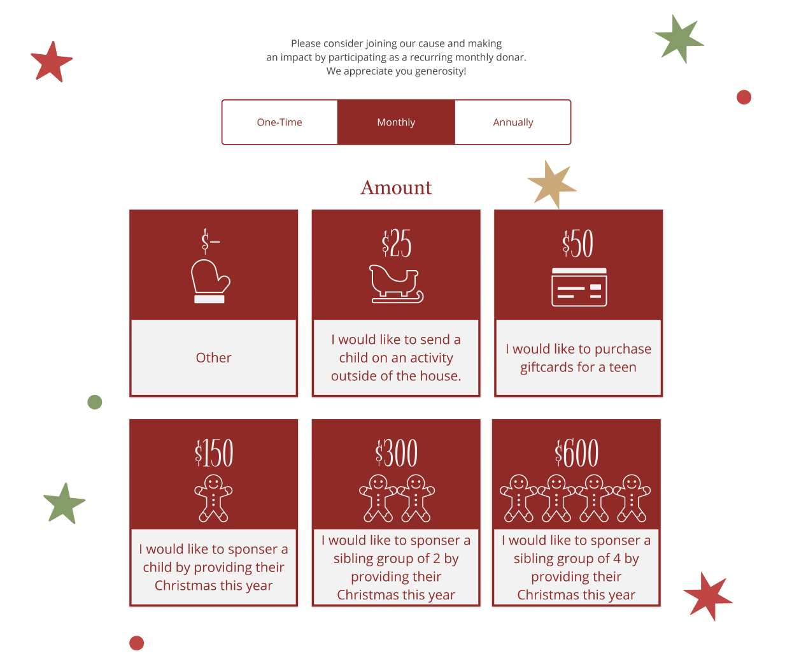

Iteration #1
Our users liked the idea of having a choice to choose from one time, monthly, and annual donations. Our users pointed out that the smaller donations should be the first options since they were more likely to generate monthly giving.

Iteration #2
The High-fidelity prototype incorporated the feedback on payment frequency and the order of payment amount. Our users also expressed that they would appreciate if the donation page was split into steps so we incorporated that user feedback.

Iteration for Mobile
The same feedback that we received on the webpage payment form was incorporated in the mobile app expereince. Users are able to select from monthly, annual or one-time payments. Additionally payment amount are sorted from smallest to largest.